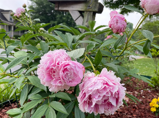
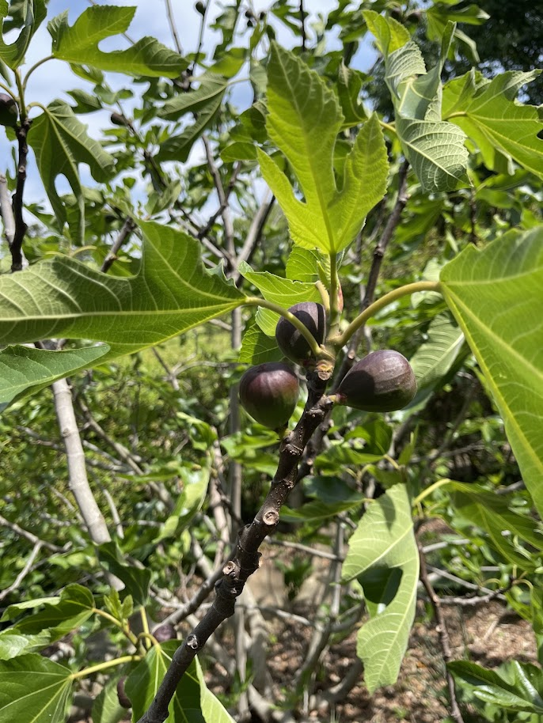

Welcome
A Garden Grown with Love
This garden has been lovingly cultivated over the years into something truly special — a living collection of over 100 carefully chosen plants, trees, and flowers from around the world. From award-winning English roses by David Austin to rare Japanese maples, from French climbing roses to productive fruit trees, every corner holds a surprise.
Many plants were selected for year-round interest: camellias bloom in early spring, peonies and roses fill the summer with colour and fragrance, chrysanthemums carry the garden through autumn, and the structural beauty of magnolias and maples shines through winter.
What follows is your guide to this extraordinary garden — a tour of its treasures, a map of its layout, and everything you need to continue its story.


